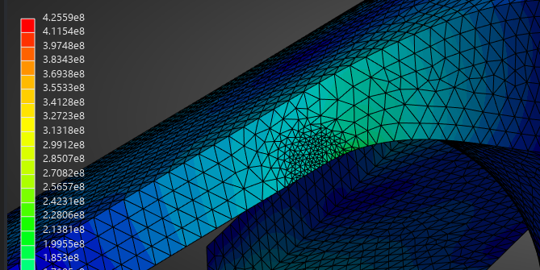
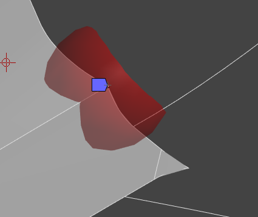
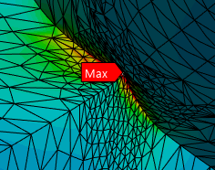

Bicycle crank stress and fatigue analysis
Static FEA of a bicycle crank in ANSYS Mechanical under a 1200 N pedal load, followed by fatigue and impact checks.
- When
- Summer 2026
- Software
- ANSYS Mechanical
- Load
- 1200 N at the pedal
- Peak stress
- 215 MPa von Mises
- Fatigue FS
- 2.05 (Goodman, 99% reliability)
- Impact yield FS
- 1.77

Setup
Fixed supports on the five bolt contact faces stand in for bolt pretension and clamping. The square bore gets frictionless supports on all four faces, restraining normal motion without fully fixing it. The load is 1200 N downward on the inner face of the pedal hole, a realistic maximum for a rider in high gear.
The model uses ANSYS structural steel. In a linear static analysis under a force load, stress doesn't depend on Young's modulus, and Poisson's ratio is nearly identical to 4130's (0.30 vs. 0.29), so the stress results apply to 4130.
Separating singularities from real stress
The raw maximum stresses sat at two singularities in sharp geometry, one at a three-face intersection. Sphere-of-influence refinement from 2 mm down to 0.25 mm confirmed both as singularities. The true maximum is 215 MPa von Mises, along the five chainring arms.






Fatigue check
Pedaling cycles the load from 0 to 1200 N, so σa = σm = 107.5 MPa. For quenched and tempered 4130 chromoly with Sut = 900 MPa, the uncorrected endurance limit is Se′ = 0.5 Sut = 450 MPa. Shigley's Marin factors correct it for the real part:
| Factor | Value | Basis |
|---|---|---|
| ka, surface | 0.886 | Ground finish, 1.58 Sut−0.085 |
| kb, size | 0.9 | Equivalent diameter of the arm cross-section |
| kc, load | 1 | von Mises stress |
| kd, temperature | 1 | Ambient temperature |
| ke, reliability | 0.814 | 99% reliability |
Se = 0.886 × 0.9 × 0.814 × 450 = 292.1 MPa
1/n = σa/Se + σm/Sut = 107.5/292.1 + 107.5/900, so n = 2.05
Impact check
A suddenly applied load doubles the static stress, so a 1200 N impact gives 2 × 215 = 430 MPa. With Sy = 760 MPa, the low end of the quenched and tempered range, the yield safety factor is 760/430 = 1.77.